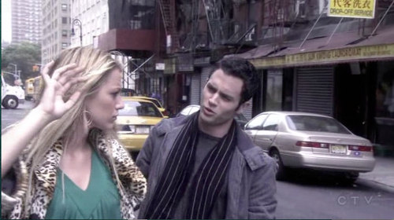
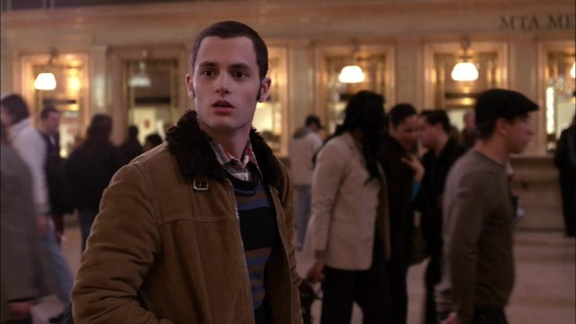

Dan blev sendt til Babycakes NYC, for at hente tærten som skulle indgå i den store Thanks giving middag senere på aftenen. Da han kommer ud fra butikken, ser han Serena, den populærere pige fra Upper East Side. Dan ser hurtigt at hun er meget fuld, og i sin fuldhed går hun direkte ud på den trafikerede vej. Dette får Dan til at reagere og han når lige at redde Serena fra at blive kørt ned. Dette var første gang Dan og Serena stødte ind i hinanden.
En dag hvor Dan, hans søster og far befinder sig på Grand Central Terminal, får Dan pludselig øje på Serena, som er hjemvendt fra kostskole. Efter denne dag, kunne Dan ikke få sine tanker væk fra den smukke overklasse pige.
Til en fest som Serenas bedste veninde, Blair Waldorf holder, møder de hinanden igen. De snakker kort, men går derefter hver til sit. På vej hjem taber Serena sin telefon, hvilket Dan tilfældigvis ser. Han samler den op, og bestemmer sig for at give hende telefonen tilbage dagen efter.
Dagen efter Blairs fest, tager Dan hen til The Palace Hotel, hvor Serena og hendes mor bor. Han går hen til receptionen og spørger, hvor han kan finde Serena. Før receptionisten når at svare, står Serena pludselig ved siden af Dan. Han aflevere telefonen, og pludselig flyver ordene ud af ham "vil du med ud og spise?". Dette er starten på en lang og kompliceret kærlighedshistorie mellem pigen fra Upper East Side og drengen fra Brooklyn.